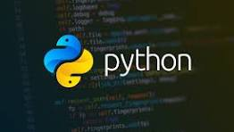

Python is a high-level, interpreted programming language known for its simplicity and readability. It was created by Guido van Rossum and first released in 1991. Python's design philosophy emphasizes code readability, making it an excellent choice for beginners and experienced developers alike.
Python supports multiple programming paradigms, including procedural, object-oriented, and functional programming. It has a vast standard library that provides tools and modules for various tasks, such as web development, data analysis, machine learning, and more. Python's versatility has made it one of the most popular programming languages in the world.
Python is widely used in various industries, including web development, scientific computing, artificial intelligence, and automation. Its ease of use and extensive community support have contributed to its widespread adoption across different domains.
Whether you're a beginner looking to learn programming or an experienced developer seeking a powerful language for your projects, Python offers a rich ecosystem of libraries and frameworks to help you achieve your goals.
